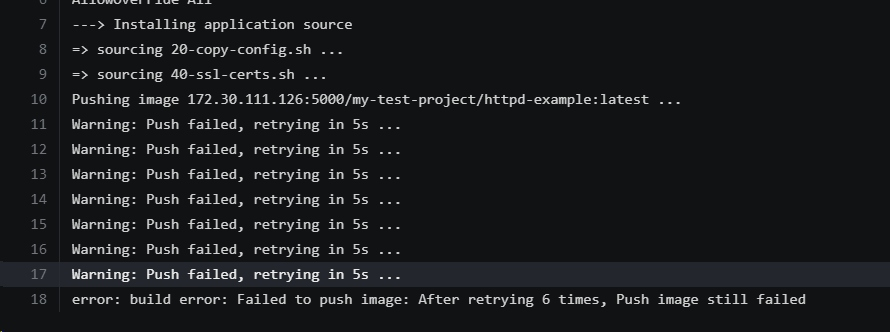
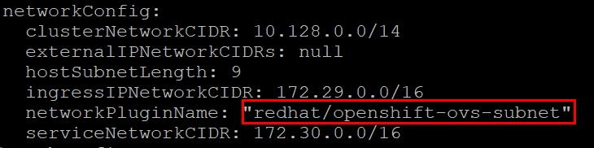
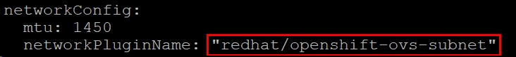

| 版本 | 日期 | 状态 | 修订人 | 摘要 |
|---|---|---|---|---|
| V1.0 | 2018-05-02 | 创建 | 开源方案 | 初始版本 |

问题原因: 没有配置openshift sdn 网络
所有计算节点都需要安装 origin-sdn-ovs 软件包 (如果master节点也做计算节点的话，也需要安装)
yum install origin-sdn-ovs.x86_64 -y
修改 主节点(master) 和 计算节点(node)的配置文件（红色框框原来默认是空的） /etc/origin/master/master-config.yaml  重启master 节点
systemctl daemon-reload
systemctl restart origin-master
修改所有计算节点的配置,与master设置一致 /etc/origin/node/node-config.yaml  重启计算节点(node)
systemctl daemon-reload
systemctl restart origin-node
注意： master 节点网络配置 和 计算节点(node) 一定要一致
通过在master 节点执行如下命令查看分配到各个节点的子网
[root@openshift-master ~]# oc get hostsubnets
NAME HOST HOST IP SUBNET
openshift-node1 openshift-node1 192.168.124.30 10.128.0.0/23
openshift-node2 openshift-node2 192.168.124.46 10.129.0.0/23
我们在rbd pool中(在上述命令中未指定pool name，默认image建立在rbd pool中)创建一个大小为1024Mi的ceph image foo，rbd list命令的输出告诉我们foo image创建成功
# rbd create foo -s 1024
# rbd list
foo
接下来，我们尝试将foo image映射到内核，并格式化该image：
root@ceph-1:~# rbd map foo
rbd: sysfs write failed
RBD image feature set mismatch. You can disable features unsupported by the kernel with "rbd feature disable".
In some cases useful info is found in syslog - try "dmesg | tail" or so.
rbd: map failed: (6) No such device or address
map操作报错。通过 “dmesg | tail”可以看到如下报错
rbd: image foo: image uses unsupported features: 0x38
ceph新版中在map image时，给image默认加上了许多feature，通过rbd info可以查看到：
# rbd info foo
rbd image 'foo':
size 1024 MB in 256 objects
order 22 (4096 kB objects)
block_name_prefix: rbd_data.10612ae7234b
format: 2 features: layering, exclusive-lock, object-map, fast-diff, deep-flatten
flags:
特性说明:
layering: 支持分层
exclusive-lock: 支持独占锁
object-map: 支持对象映射（依赖 exclusive-lock ）
fast-diff: 快速计算差异（依赖 object-map ）
deep-flatten: 支持快照扁平化操作
问题原因: CentOS 7 的3.10内核仅支持ceph image其中的layering feature，其他feature概不支持
# rbd feature disable foo exclusive-lock, object-map, fast-diff, deep-flatten
root@ceph-1:/var/log/ceph# rbd info foo
rbd image 'foo':
size 1024 MB in 256 objects
order 22 (4096 kB objects)
block_name_prefix: rbd_data.10612ae7234b
format: 2
features: layering
flags:
#仅是layering对应的bit码所对应的整数值
rbd_default_features = 1
#设置完后，通过下面命令查看配置变化：
# ceph --show-config|grep rbd|grep featuresrbd_default_features = 1
rbd create foo --size 10G --image-format 1 --image-feature layering
# rbd map foo
# ls -l /dev/rbd0
# map后，我们就可以像格式化一个空image那样对其进行格式化了，这里格成ext4文件系统
# mkfs.ext4 /dev/rbd0
mke2fs 1.42.9 (4-Feb-2014)
Discarding device blocks: done
Filesystem label=
OS type: Linux
Block size=4096 (log=2)
Fragment size=4096 (log=2)
Stride=1024 blocks, Stripe width=1024 blocks
65536 inodes, 262144 blocks
13107 blocks (5.00%) reserved for the super user
First data block=0
Maximum filesystem blocks=268435456
8 block groups
32768 blocks per group, 32768 fragments per group
8192 inodes per group
Superblock backups stored on blocks:
32768, 98304, 163840, 229376
Allocating group tables: done
Writing inode tables: done
Creating journal (8192 blocks): done
Writing superblocks and filesystem accounting information: done
挂载到系统中，就可以使用了